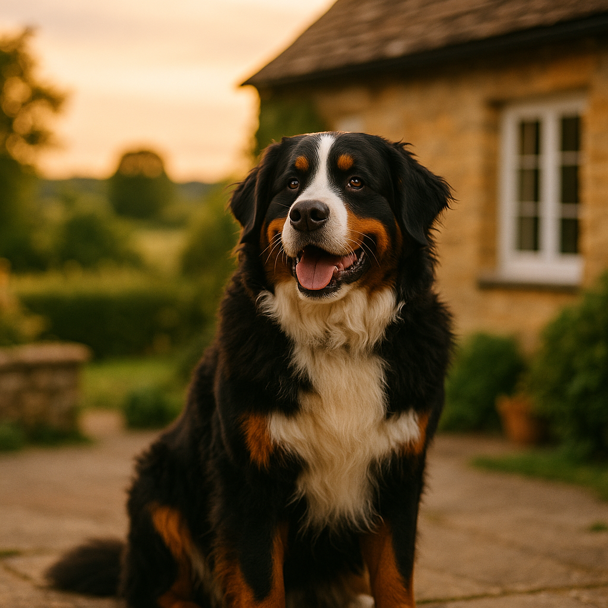

Best Food for Staffordshire Bull Terriers UK 2026: Breed-Specific Nutrition Guide
Contents
- What Are the Nutritional Needs of the Staffordshire Bull Terrier?
- Which Common Health Issues Affect a Staffy's Diet?
- What Is the Best Dry Dog Food for Staffies in the UK?
- What Are the Best Wet and Raw Options for Staffies?
- How Much Should You Feed a Staffy at Each Life Stage?
- Which Ingredients Should Sensitive Staffies Avoid?
- Budget vs Premium Dog Food: What Does the Difference Actually Mean for Staffies?
- Frequently Asked Questions
This article contains affiliate links. We may earn a small commission if you make a purchase, at no extra cost to you.
The best food for a Staffordshire Bull Terrier in the UK is a high-protein diet built around a named meat source, with moderate fat, joint-supporting nutrients, and ideally limited ingredients to account for the breed's famously sensitive skin. Staffies are compact, muscular dogs with a high metabolic rate and a tendency towards food-related allergies, so what goes in their bowl genuinely matters more than it might for some other breeds.
Whether you have a bouncy Staffy puppy charging through the kitchen or a calmer adult who has claimed the sofa as their own, this guide covers everything: what nutrients Staffies actually need, which UK foods consistently deliver, how much to feed at each life stage, and what to avoid if your dog is prone to scratching. We have pulled together vet guidance, ingredient research, and honest product assessments so you can make a genuinely informed choice, not just pick whatever is on offer at the supermarket.
What Are the Nutritional Needs of the Staffordshire Bull Terrier?
Staffordshire Bull Terriers need a diet that supports their naturally muscular physique, which means protein should be the cornerstone of every meal. According to the British Veterinary Association (BVA), dogs classed as medium-breed, active types require a minimum of 25 to 30 per cent crude protein in dry matter terms, and Staffies sit firmly in that category. Protein supports lean muscle maintenance, immune function, and healthy skin and coat, all of which are particular concerns for the breed.
Fat is the second key macronutrient. Healthy fats, particularly omega-3 fatty acids from sources like salmon oil or flaxseed, are important for Staffies because they help manage the breed's predisposition to inflammatory skin conditions. A good Staffy food will typically contain around 15 to 18 per cent fat on a dry matter basis. Too little and the coat looks dull; too much and weight gain becomes a risk, especially for neutered or less active dogs.
Carbohydrates are less critical but still relevant. According to Loyal & Loved, highly processed grain sources and high-glycaemic fillers like maize syrup can trigger digestive upset and inflammatory responses in sensitive Staffies. Opt for foods where named complex carbohydrates, such as sweet potato, brown rice, or oats, appear lower down the ingredient list rather than dominating it.
| Nutrient | Why It Matters for Staffies | Recommended Level (Dry Matter) |
|---|---|---|
| Crude Protein | Maintains lean muscle mass | 25 to 30%+ |
| Omega-3 Fatty Acids | Reduces skin inflammation | 0.5 to 1.5% |
| Glucosamine | Supports joint health | 400 to 1,000mg/kg |
| Crude Fat | Energy and coat condition | 15 to 18% |
| Fibre | Digestive regularity | 2 to 4% |
As Loyal & Loved explains, Staffies are not giant breeds, but they do carry significant muscle for their size, typically weighing between 11 and 17 kg. That means calorie density matters. A food that works brilliantly for a sedentary Cavalier King Charles Spaniel may leave a working-weight Staffy underfed or, conversely, a less active one overweight. Always check the feeding guidelines against your individual dog's current weight and activity level, and adjust accordingly.
Which Common Health Issues Affect a Staffy's Diet?
Two health challenges come up again and again with the Staffordshire Bull Terrier: skin allergies and joint health. Understanding both will help you choose a food that does more than just fill the bowl.
Skin Allergies and Food Sensitivities
Staffies are among the breeds most commonly presented to UK vets for atopic dermatitis, a chronic itchy skin condition often driven or worsened by environmental triggers and food intolerances. According to a 2019 paper published in the journal Canine Genetics and Epidemiology, Staffordshire Bull Terriers have a statistically elevated risk of skin conditions compared to the general dog population. The most common dietary culprits are beef, chicken, dairy, wheat, and soya, all of which appear frequently in budget dog foods.
If your Staffy scratches persistently, has red paws, recurring ear infections, or a dull coat, diet is one of the first places to look. A hydrolysed protein or novel protein diet (using an ingredient your dog has not previously been exposed to, such as venison, duck, or kangaroo) can help identify and manage food intolerances. For a deeper dive into managing this through diet, our guide to food for dogs with itchy skin covers the evidence in detail.
Joint Health
Staffies are a brachycephalic-adjacent breed with a heavy, low-slung build. While they are not as prone to hip dysplasia as some larger breeds, their compact musculature puts strain on joints over time, and the breed does see elbow and knee issues, particularly in dogs who were overweight in puppyhood. Foods that include natural glucosamine and chondroitin sources, such as chicken cartilage or green-lipped mussel, offer meaningful support according to the Royal College of Veterinary Surgeons (RCVS) guidance on canine orthopaedic nutrition (2024 update). Look for foods that list these ingredients explicitly rather than relying on synthetic supplementation alone.
What Is the Best Dry Dog Food for Staffies in the UK?
The best dry dog food for Staffies in the UK combines a high named-meat content (ideally 50 per cent or above), limited artificial additives, and ideally some form of omega support for skin health. Here are the options Loyal & Loved found most worth recommending in 2026.
1. Bella & Duke Raw Coated Kibble
Bella & Duke's raw-coated kibble (approximately £45 to £55 for a 5 kg bag depending on protein choice) combines the convenience of dry food with a coating of freeze-dried raw meat and organs. The protein content sits above 28 per cent, and there is meaningful omega-3 inclusion via salmon oil, making it a solid choice for Staffies with sensitive skin. It is grain-free, which suits dogs with wheat or barley sensitivities, though grain-free diets should only be chosen for dogs with a confirmed or suspected grain intolerance, given ongoing research into grain-free food and cardiac health in dogs (FDA ongoing investigation, first raised 2018, still being monitored as of 2026). You can find out more via Bella & Duke's website.
- Pros: High protein, real raw coating, omega-3 included, no artificial preservatives.
- Cons: Premium price point; grain-free formulation requires informed choice.
2. AATU 80/20 Dry Dog Food
AATU's 80/20 range means 80 per cent animal ingredients and 20 per cent botanicals and superfoods, with no grains, gluten, or artificial nasties. Their salmon and herring single-protein option is particularly well-suited to Staffies who have already reacted to chicken or beef. Prices run from around £18 to £24 for 3 kg, making it mid-tier in cost. Browse the range at AATU's UK store.
- Pros: Single-protein options, excellent for sensitive dogs, strong ingredient transparency.
- Cons: Some dogs take time to transition; not widely available in supermarkets.
3. Barking Heads Breed-Specific or Sensitive Range
Barking Heads offer a range of dry foods aimed at UK dog owners who want better-quality ingredients without fully committing to raw. Their "Tummy Lovin' Turkey" and "All Hounder" lines work well for Staffies who need a gentle, digestible diet. Expect to pay around £14 to £20 for 4 kg. See the full range at Barking Heads' website.
- Pros: More accessible price, widely available, palatable.
- Cons: Lower meat content than Bella & Duke or AATU; some lines include rice which may not suit very grain-sensitive dogs.
4. Your Pet Nutrition Custom Dry Food
Your Pet Nutrition allows you to build a bespoke kibble recipe, which is genuinely useful if your Staffy has multiple sensitivities or has been through an elimination diet. The cost varies by recipe but typically ranges from £30 to £50 per month for an average-sized Staffy. Explore your options via Your Pet Nutrition's site.
- Pros: Tailored to your dog, great for complex cases.
- Cons: More expensive; requires you to know what your dog needs.
What Are the Best Wet and Raw Options for Staffies?
Wet food and raw feeding both have a legitimate place in a Staffy's diet, particularly for dogs who need hydration support or have dental issues that make dry food uncomfortable. Here is what to consider for each.
Wet Food
Good-quality wet food for Staffies should list a named meat as the first ingredient and contain at least 60 per cent meat content. Barking Heads and AATU both produce wet options that meet this standard. Wet food is also useful for adding interest to a dry-food meal, a trick that works especially well with stubborn eaters. Budget around £1.50 to £3.00 per 400 g tin for a decent mid-range product. Cheaper supermarket options often rely heavily on cereals and derivatives, which offer poor nutritional value for the cost.
Raw Feeding (BARF)
Biologically Appropriate Raw Food (BARF) is a feeding approach based on raw meat, bones, and organs, sometimes combined with vegetables and supplements. Bella & Duke produce complete raw meals that are compliant with FEDIAF (the European Pet Food Industry Federation) nutritional guidelines, meaning they are nutritionally balanced and not simply raw meat thrown in a bag. A month's supply for a typical 15 kg Staffy typically costs between £60 and £90 with Bella & Duke, depending on your protein choices. You can explore their full range at the Bella & Duke website.
Raw feeding requires careful handling to reduce the risk of bacterial contamination (Salmonella, Listeria, E. coli), which is particularly important in households with young children, elderly people, or immunocompromised individuals. The UK Veterinary Medicines Directorate (VMD) and RCVS both advise careful hygiene management for anyone choosing raw. Our article on raw feeding basics covers safe handling in full.
Loyal & Loved found that many Staffy owners who switch to raw or raw-coated food report visible improvements in coat quality and reduction in scratching within six to eight weeks, though individual results vary and switching during an active allergy flare is best done under vet guidance.
How Much Should You Feed a Staffy at Each Life Stage?
Feeding amounts for a Staffordshire Bull Terrier depend on age, weight, and activity level. The following table gives a general guide, but always cross-reference with your chosen food's specific guidelines, as calorie density varies considerably between brands.
| Life Stage | Typical Weight Range | Daily Feeding Amount (Dry Food) | Meals Per Day |
|---|---|---|---|
| Puppy (8 to 16 weeks) | 3 to 7 kg | 120 to 180 g | 4 |
| Puppy (4 to 6 months) | 7 to 12 kg | 180 to 250 g | 3 |
| Junior (6 to 12 months) | 10 to 15 kg | 200 to 280 g | 2 |
| Adult (1 to 7 years) | 11 to 17 kg | 180 to 300 g | 2 |
| Senior (7 years+) | 10 to 16 kg | 160 to 250 g | 2 |
Staffy Puppy Feeding
Staffy puppies grow fast and have high energy demands relative to their size. Choose a puppy-specific formula or an "all life stages" food that meets FEDIAF puppy nutritional standards. Avoid adult-only foods during the first year, as the calcium-to-phosphorus ratio in puppy food is carefully calibrated to support bone development. According to the RCVS, overfeeding puppies of muscular breeds can accelerate growth in ways that put undue stress on developing joints, so use the feeding guide as a ceiling, not a target.
Senior Staffy Feeding
Staffies begin to slow down metabolically from around seven years of age. Senior formulas with reduced calories, higher joint support, and added antioxidants (such as vitamins E and C) are appropriate. Watch for weight gain, which becomes a more significant health risk as Staffies age, particularly for neutered individuals.
Which Ingredients Should Sensitive Staffies Avoid?
Sensitive Staffies do best when their food avoids a core list of common triggers, most of which appear routinely in lower-quality pet foods. The following are the ingredients most frequently associated with adverse reactions in the breed.
- Beef and beef derivatives: One of the most common food allergens in dogs, according to a 2016 study in BMC Veterinary Research. Ironic given how many "natural" dog foods lead with beef.
- Chicken (for some individuals): The single most prevalent protein in UK dog food, which also makes it a common sensitiser. If your Staffy has skin issues, a novel protein trial excluding chicken is often the first recommendation from a veterinary dermatologist.
- Wheat and gluten: Associated with digestive upset and skin flares in sensitive dogs. Wheat is used widely in budget kibble as a cheap filler.
- Soya: A common protein substitute that frequently appears in mid-range foods; known to cause digestive issues and potential hormonal disruption with long-term use.
- Artificial colours, flavours, and preservatives: Particularly BHA, BHT, and ethoxyquin. These are not banned in UK pet food as of 2026, but the Pet Food Manufacturers' Association (PFMA) advises choosing foods preserved naturally where possible.
- Generic "meat and animal derivatives": This catch-all phrase on an ingredient label means the protein source can change batch to batch, making it impossible to identify and eliminate a specific allergen.
- High-sugar ingredients: Including molasses, fructose syrup, and caramel colouring, which add palatability but contribute to weight gain and dental decay.
As Loyal & Loved explains, the single most useful thing you can do when managing a sensitive Staffy's diet is to keep a food diary. Note what they ate, when symptoms appeared, and what changed. It sounds low-tech, but it is the foundation on which every proper veterinary elimination diet is built.
Frequently Asked Questions
What is the best food for a Staffordshire Bull Terrier with sensitive skin in the UK?
The best food for a Staffy with sensitive skin is one built around a novel or single protein source (such as salmon, duck, or venison) with no artificial additives, no generic "meat derivatives," and meaningful omega-3 inclusion. Bella & Duke raw complete meals and AATU 80/20 single-protein dry foods are among the strongest options available in the UK in 2026. For a detailed guide to managing food-related skin issues, see our article on food for dogs with itchy skin.
How much should I feed my Staffy puppy in the UK?
A Staffy puppy aged eight to sixteen weeks typically needs 120 to 180 g of a quality puppy dry food per day, split across four meals. By four to six months, you can reduce to three meals and increase the total daily amount to around 180 to 250 g, adjusting based on body condition. Always use a puppy-specific or "all life stages" formula. Avoid adult dog food until your Staffy is at least twelve months old, as puppy-specific calcium and phosphorus ratios are important for healthy bone development.
Is raw food good for Staffordshire Bull Terriers?
Raw food can work very well for Staffies, particularly those with skin sensitivities or digestive issues, because it avoids the processed ingredients and heat-damaged proteins found in some kibbles. Complete raw meals from a reputable UK supplier like Bella & Duke are formulated to meet FEDIAF nutritional guidelines, so they are not nutritionally incomplete. However, raw feeding requires careful hygiene and is not recommended in households with very young children, pregnant women, or immunocompromised individuals. Read our full guide to raw feeding basics before switching.
What foods should Staffordshire Bull Terriers avoid?
Beyond the obvious toxins like chocolate, grapes, and onions, Staffies with sensitivities should specifically avoid foods containing beef, chicken (as a potential allergen), wheat, soya, and artificial preservatives such as BHA and BHT. Ingredient labels listing generic "meat and animal derivatives" are also worth avoiding if your dog has known intolerances, as the protein source can change between production batches without warning.
Is grain-free dog food better for Staffies?
Grain-free food is appropriate for Staffies with a confirmed or suspected grain intolerance, but it is not automatically superior for all dogs. The US Food and Drug Administration (FDA) has been investigating a potential link between grain-free diets and dilated cardiomyopathy (DCM) in dogs since 2018, and as of 2026, research is still ongoing. The RCVS advises UK owners to discuss grain-free feeding with their vet rather than switching on the assumption it is universally healthier. If your Staffy has no grain sensitivity, a quality food that includes wholegrains like brown rice or oats is perfectly appropriate.